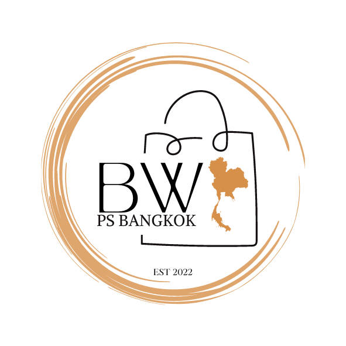
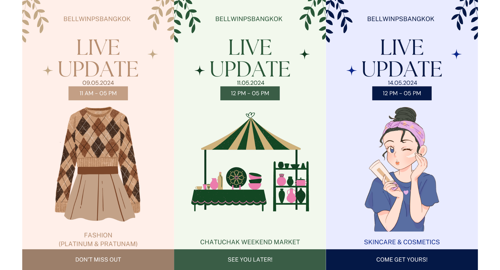

In celebration of the highly anticipated 12.12 sale, we launched a captivating promotion designed to delight coffee enthusiasts and bargain hunters
alike. Our exclusive offer centered around the iconic Starbucks 24oz tumblers, providing customers with an enticing incentive to elevate their coffee
experience while enjoying significant savings. During the 12.12 sale period, customers were invited to partake in our exciting offer: receive RM5 off
their purchase when acquiring their second 24oz Starbucks tumbler. This promotion was crafted to add a dash of excitement to the shopping experience
while rewarding our loyal customers for their continued support.
Tumbler sales experienced a substantial uplift with increased of 50% profit, demonstrating the effectiveness of the promotion in driving purchase intent.
The 12.12 Starbucks Tumbler Sale Extravaganza proved to be a resounding success, demonstrating the power of strategic promotions in driving sales,
enhancing customer experiences, and strengthening brand loyalty. As we continue to innovate and evolve our marketing initiatives, we remain committed
to delivering exceptional value and memorable moments to our valued customers.

In May 2024, we decided to revamp our brand to give it a more chic and modern look. I came up with the logo to encapsulate our narrative.
1. BW: BW stands for our name, Bell & Win. It's our name, our essence, and what people come to recognize us by.
2. Map of Thailand: Placing a map of Thailand in our logo is a powerful symbolic choice. It communicates to our audience that our operations
are based in Thailand, fostering a sense of locality and trust. It tells our customers that we understand the local market intimately and are
positioned to cater to their needs effectively.
3. Shopping Bag: The shopping bag icon is a clear indication of our business's nature—personal shopping. It's instantly recognizable and universally
associated with retail and commerce. This element communicates the primary service or product we offer—assistance in shopping, whether it's for groceries,
fashion, or any other need.
4. Est 2022: Including "Est 2022" adds a touch of establishment and credibility to our brand. It communicates to our audience that we're not a newcomer but
rather have been around for some time, implying experience and reliability. It also serves as a subtle nod to our beginnings, highlighting the journey we've
taken since our establishment.

In May 2024, we embarked on an innovative endeavor to enhance customer engagement and streamline their shopping experience through live updates
on our Telegram channel. This campaign focused on three vibrant categories: Fashion, Handcraft, and Skincare & Cosmetics, offering our audience
real-time insights into the latest arrivals and exclusive offerings.
The May 2024 Live Update Initiative yielded promising outcomes, including increased engagement. The initiative sparked heightened engagement among
our audience, with a significant uptick in interactions and participation during the live update. Feedback from customers indicated a positive response
to the live updates, citing improved convenience and accessibility as key factors. By providing valuable real-time updates, we strengthened our connection
with customers, fostering loyalty and affinity towards our brand. The May 2024 Live Update Initiative exemplified our commitment to innovation and
customer-centricity, demonstrating the effectiveness of real-time communication in enhancing the shopping experience.

As a personal shopper committed to providing exceptional service and convenience, we launched a dynamic initiative to keep our customers informed
and engaged through social media platforms. This project aimed to leverage the power of social media to provide timely updates, exclusive offers,
and personalized recommendations, ensuring that our clientele remained connected and well-informed. Through strategic use of social media channels,
we aimed to establish open lines of communication with our customers, facilitating seamless interaction and feedback. The project focused on delivering
timely updates on new arrivals, promotions, and shopping opportunities, keeping our customers abreast of the latest trends and offerings. A comprehensive
content strategy was developed to ensure that updates were engaging, informative, and relevant to our audience. We leveraged a variety of social media platforms,
including Instagram, and Tiktok to reach our customers wherever they were most active. The Social Media Customer Update Initiative exemplified our dedication
to delivering exceptional service and value to our customers. By harnessing the power of social media, we were able to keep our clientele informed, engaged,
and connected, ultimately enhancing their overall shopping experience.